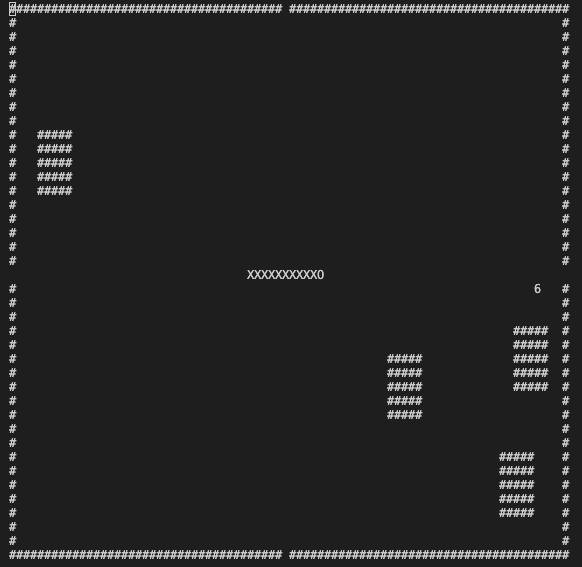
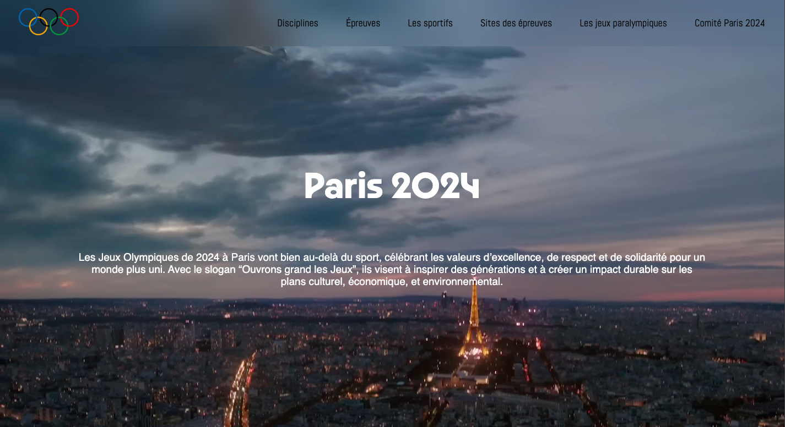
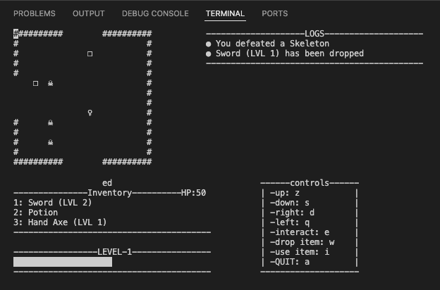
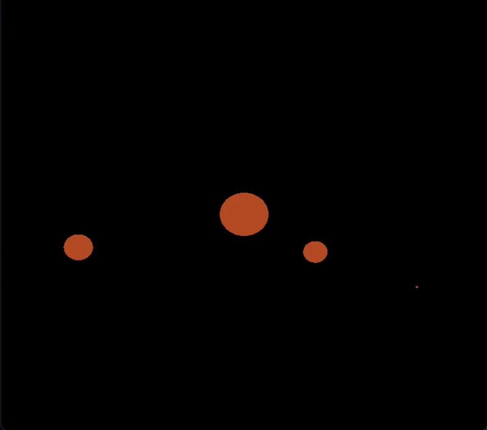

SNAKE

Langage(s)

Conception
Programmation
Test
Documentation
Projet de formation visant à programmer en langage C un jeu Snake en suivant un cahier des charges.
Un cahier de test était à réaliser à chaque étape du projet et une documentation avec doxygen à été réalisé.
Lien vers le Github
SNAKE Automatique

Langage(s)
Programmation
Test
Optimisation
Projet de formation visant à automatiser l'avancée du serpent à partir du Projet de Snake.
En Équipe de 2, nous avons réalisé l'optimisation du programme pour avoir le moyen le plus optimisé de finir le jeu.
Lien vers le Github
Site Fictif Jeux Olypiques 2024

Langage(s)


Maquettage
Programmation Web
Projet de formation visant à réaliser en équipe un site web fictif sur les Jeux Olympiques de Paris 2024.
La charte graphique et le maquettage ont été réalisés sur FIGMA, j'ai réalisé de mon coté la page de l'épreuve.
Lien vers le Github
Edouard's Donjon

Langage(s)

Conception
Programmation
Test
Projet Personnel visant à m'améliorer en Programmation Orienté Objet et à réaliser un petit jeu.
Le but est de se ballader dans des salles générées aléatoirement, se battre contre des monstres et augmenter de niveau.
Lien vers le Github
Simulateur de physique

Langage(s)

Programmation
Projet personnel visant à découvrir le langage C++.
On retrouve des programmes pour simuler la physique entre plusieurs objets, réalisé avec OpenGL en m'inspirant de plusieurs vidéos.
Lien vers le Github